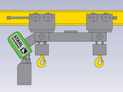

Talha elétrica de Duplo Gancho STD
As talhas elétricas de duplo gancho modelo STD permitem a elevação de cargas longas ou outras cargas que necessitem a elevação através de dois pontos.
Os dois ganchos de carga da talha elétrica de corrente STD trabalham absolutamente sincronizados, mesmo se a carga for desigual.
A distância entre os dois ganchos de carga pode ser especificada de acordo com a necessidade e do tipo de carga a ser transportada.
Duas versões são disponíveis:
Versão E - Talhas Elétricas de Duplo Gancho STD
os ganchos de carga são de um mesmo lado da talha

Versão Z
os ganchos de carga são do lado esquerdo e direito da talha

Os tipos de montagem das talhas elétricas de duplo gancho STD são dois:
Talha fixa
Para aplicações estacionárias, a talha elétrica de corrente STD, tanto na versão E quanto na versão Z, é montada através de uma suspensão rígida a ser instalada na viga metálica.
Talha com trole elétrico, modelo UE
Em conjunto com um trole elétrico, a talha elétrica STD torna-se uma unidade móvel de levantamento, disponível nas versões E e Z.
Produtos STAHL:
- Talha elétrica de corrente
- Talhas elétricas de cabo de aço
- Ponte rolante apoiada univiga
- Ponte rolante apoiada dupla-viga
- Pontes rolantes suspensas
- Guindaste giratório
- Monovias
- Blocos de rodas
- Kit de componentes
Peças sobressalentes; manutenção preventiva e corretiva
Consultoria especializada em transporte e movimentação de carga e fornecimento de componentes para outros fabricantes.
Todos os equipamentos podem ser fornecidos na versão á prova de explosão.